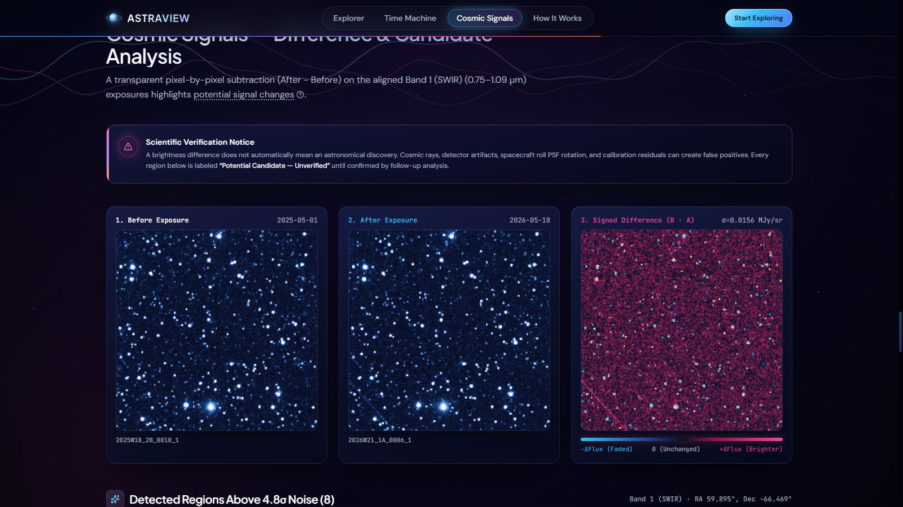

05 · Demo and results
What the judges can click, right now.
1 513
FITS indexed
36
verified pairs
381
days baseline
6
detectors
102
bands
8
candidates > 4.8σ

Time Machine. Overlap centre RA 59.8966°, Dec −66.6688°,
FOV 0.4133°, Band 1 (SWIR) — 2025-05-01 against 2026-05-18, 381.46 days apart, aligned on sky
coordinates so the stars sit on top of each other.

Cosmic Signals. Before, after, and the signed difference
(B − A, σ = 0.0156 MJy/sr), with the verification notice on screen and 8 regions above 4.8 σ listed
below the panels.
All screenshots: the deployed app on real SPHEREx DR1 / QR3 cutouts05 / 07